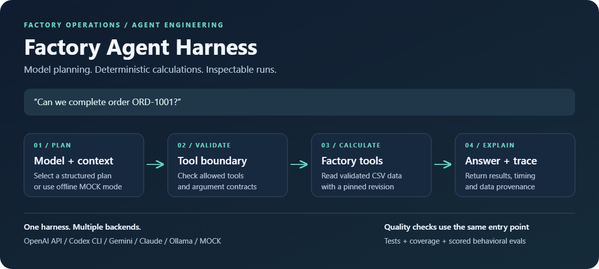

Context & planning
Give the model the request, relevant context and available tool definitions. Keep the task and execution boundaries explicit.
Engineering notes / Jayaragul N
Building an AI agent means designing the system around the model: the context it sees, the tools it can call, the actions it must refuse, and the evidence that it works.
I'm Jayaragul N, an AI engineer at Genorai in Coimbatore, India. I work on agentic automation and generative AI. This page walks through the engineering decisions in my public Agent Harness project, a factory AI copilot built from scratch.

01 / The problem
A factory request can involve inventory, machine requirements or operational risk. A language model can interpret the question, but the business facts need to come from tools and domain logic. In Agent Harness, natural-language requests become guarded, validated tool calls rather than unsupported answers.
02 / The architecture
Give the model the request, relevant context and available tool definitions. Keep the task and execution boundaries explicit.
Check proposed actions and arguments before running deterministic factory tools for inventory, machines and risk.
Make the tool results and execution trace available so an answer can be checked against what actually happened.
03 / Reliability
Agent Harness includes a behavioral evaluation harness to measure regressions. The questions extend beyond whether the final wording sounds right: did the agent select the appropriate tool, respect the execution boundary and use the returned facts?
Context engineering, memory, orchestration and guardrails are parts of the same system. An agent needs enough context to act usefully, and clear boundaries that keep its actions understandable.
04 / Explore further
The repository is the place to inspect the implementation and its current state. My portfolio also includes a language model trained from scratch, an autonomous AI news pipeline and mathematical optimisation work.